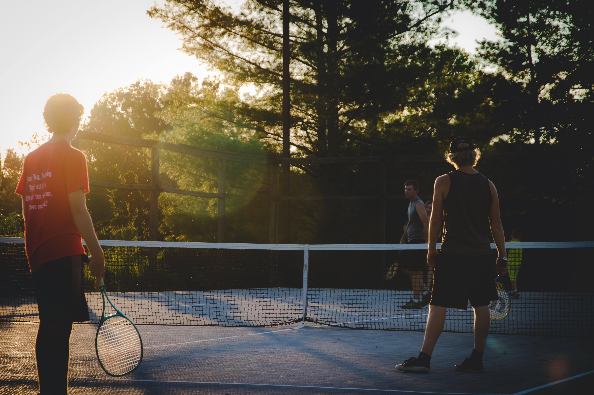

Fishing has long been a passion of mine, serving as both a recreational pastime and a source of tranquility. There's something truly meditative about casting a line into the water, immersing myself in the serene rhythm of nature. It's not just about the thrill of the catch but also the peaceful solitude that comes with being surrounded by the gentle lapping of the water and the quiet serenity of the outdoors. Whether it's early mornings by the lake or lazy afternoons on a boat, every fishing trip brings a unique sense of anticipation and contentment, allowing me to disconnect from the demands of daily life and reconnect with the natural world. What truly draws me to fishing is the sense of connection it fosters with the environment. It's not merely about the act of catching fish but also about appreciating the intricacies of aquatic ecosystems and the delicate balance of life within them. Understanding the behavior of different fish species, learning about various baiting techniques, and honing my skills as an angler have all contributed to a deeper appreciation for the natural world. Beyond the thrill of reeling in a prized catch, it's the holistic experience of being one with nature that truly captivates me and makes fishing an integral part of my life.
Tennis is not just a sport for me; it's a cherished activity that has brought my family closer together. From friendly matches in the local court to exhilarating family tournaments during weekends, tennis has become a delightful tradition that we all eagerly look forward to. It has created a special bond among us, fostering moments of laughter, friendly competition, and shared joy. The game has become a cornerstone of our family dynamic, providing us with a common ground where we can all come together, enjoy each other's company, and create lasting memories. What makes tennis particularly enjoyable for my family is the element of fun and excitement it brings to our lives. From the thrill of a perfectly executed serve to the satisfaction of a well-placed volley, each game is filled with moments of exhilaration and friendly banter. Regardless of skill level, we all approach the game with a sense of enthusiasm and a spirit of friendly rivalry, making every match an opportunity for bonding and lighthearted competition. Tennis has not only become a means for us to stay active and healthy but has also strengthened the bonds that tie us together, making it a cherished and integral part of our family life.